Comparison in STEM
STEM can automatically identify pairs of temporal expression profiles from two different experimental conditions such that there is a statistically significant intersection in the sets of genes assigned to the two profiles. STEM also allows one to easily find out among the genes assigned to one or more profiles under one set of conditions what temporal response they had in an experiment under a different set of conditions. The images here are presented assuming a user is interested in profiles from the novel STEM clustering method, but an analogous analysis can be done in STEM for K-means clusters.
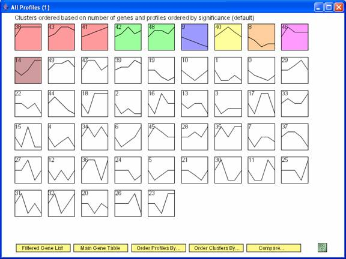
The above screen shows the statistically significant temporal profiles under one set of conditions. Clicking “Compare” brings up the dialog box below to specify a comparison data set.
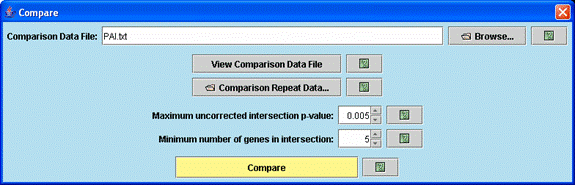
Through the above dialog box one specifies the comparison data file, the minimum number of genes in a significant intersection, and the p-value (based on the hypergeometric distribution) of a significant intersection. Clicking “Compare” brings up two windows, a main profile window for the comparison experiment and a main comparison window described below.
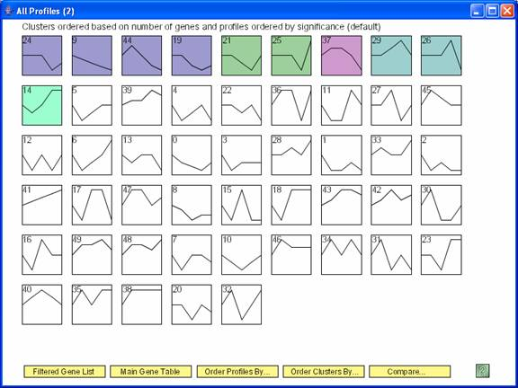
One window that appears after clicking ‘Compare’ is the window with all the profiles from the comparison data set, with the colored profiles having a statistically significant number of genes in the comparison experiment.
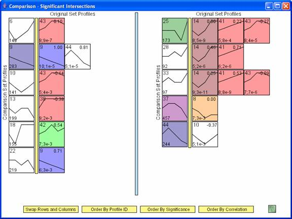
The main comparison window, an example of which appears above, shows pair of profiles such that there is a significant intersection of genes between the two profiles. In the above image the profiles to left of the yellow bar are from the comparison data set, while those to the right of the yellow bar are from the original data set. There is no difference between profiles to the left or right of the blue bar. The number in the lower left hand corner of a profile to the left of the yellow bar is the number of genes assigned to the profile in the comparison data set. The profiles to the right of the yellow bar are profiles from the original data set for which a significant number of genes assigned to it were also assigned to the profile to the left of the yellow bar in the comparison experiment. The numbers in the lower left hand corner of the profiles to the right of the yellow bar are the number of genes assigned to the profile that were also assigned to the profile to the left of the yellow bar, and separated by a semicolon the p-value significance for the number of genes in the intersection. The number in the top right corner is the correlation between the two profiles. The ‘Swap Rows and Columns’ option reverses the roles of the original and comparison data sets, swapping which data set is to the left and the right of the yellow bar. By default the original data set is to the left of the yellow bar, so the ‘Swap Rows and Columns’ option was applied to the above window. The rows and then profiles within the same row can be ordered based on profile ID, significance of the intersection, or the minimum correlation with a profile from the other experiment.
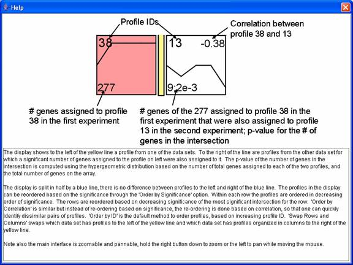
The above window gives help information for the comparison interface.
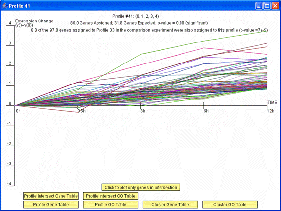
Clicking on a profile to the right of the yellow bar on the main comparison window brings up a profile window. Pressing the “Profile Intersect Gene Table” button on this window displays a table of just the genes assigned to this profile that also were assigned to the profile to the left of the yellow bar in its row on the main comparison window. Pressing the “Click to plot only genes in intersection” replots the window with only these genes. Pressing the “Profile Intersect GO Table” opens a table with Gene Ontology (GO) enrichment for just the genes in the intersection.
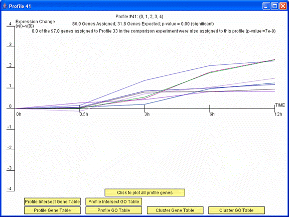
The image above is the profile window that appeared previously after pressing the “Click to plot only genes in intersection” button. The window above plots only the 8 genes in profile 41 in the original experiment and profile 33 in the comparison experiment.
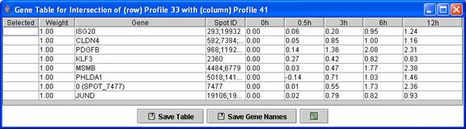
Above is an example of a profile intersection gene table. The table contains just the genes in the intersection of profile 41 in the original experiment and profile 33 in the comparison experiment.
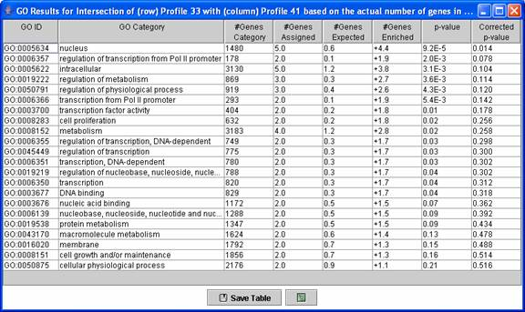
Above is an example of a Gene Ontology (GO) enrichment analysis table for genes in a profile intersection. The table above contains an enrichment analysis for just the genes in the intersection of profile 41 in the original experiment and profile 33 in the comparison experiment.
After a comparison data set has been specified through the comparison dialog, it is also possible to reorder a set of profiles or cluster of profiles on a main profile window based on enrichment for genes assigned to a profile or set of profiles in the other experiment.
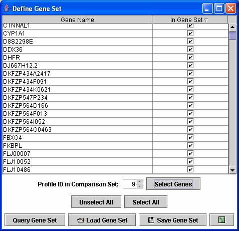
On a main profile window the profiles or cluster of profiles can be reordered by their enrichment of genes for a set of genes assigned to profile(s) from the other experiment. By selecting the “Define Gene Set” from an “Order Profiles by” or “Order Clusters by” window, a window as above appears. In the above window by pressing “Select Genes” with 9 showing next to the “Profile ID in Comparison Set” selects all genes assigned to profile 9 in the comparison set. Genes from multiple profiles can also be selected. Pressing “Query Gene Set” would then reorder the profiles in the original experiment based on their enrichment for genes assigned to profile 9 in the comparison experiment.
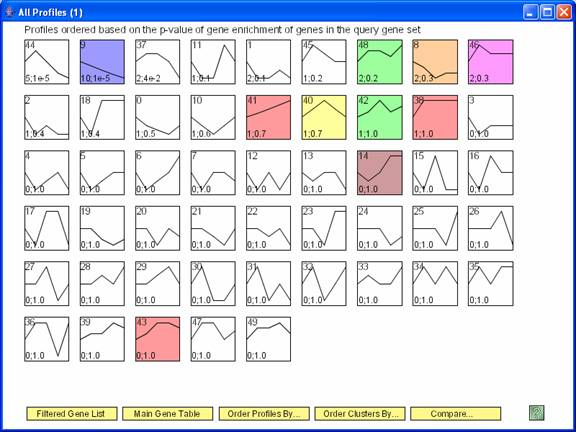
The profiles from the original experiment reordered based on their enrichment for genes assigned to profile 9 from the comparison experiment. The number in the bottom left hand corner of a profile box are the number of genes from profile 9 in the comparison experiment that were assigned to the profile in the original experiment and the p-value for seeing this many genes.